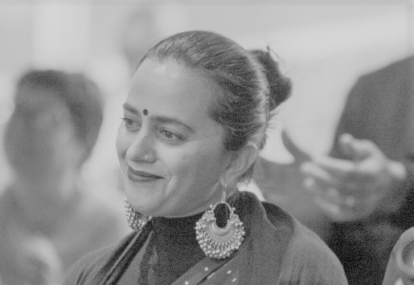

At the companies of NowSecure and ContextMedia, she found herself in situations where not only was the environment extremely toxic, but in some cases, her company was also doing some slightly illegal things without telling their employees about it.
Recalling these experiences, she quips, “ I mean what the fuck, did I just find the shittiest companies or something?”
It didn’t help that the people she worked for people with a distorted view of her race. When people think of South Asians, they think of the model minority, the traditional doctor, lawyer, or engineer that is educated, quiet, and all that. Because of that, many South Asians are overworked and underpaid. Most who come from a South Asian country to America are viewed as subservient, because they don’t challenge authority. Arti shatters this stereotype, but this bravery has its consequences. Arti admits “..I am very assertive, I have no filter, and because of the stereotype, I get labeled as a bitch or aggressive a lot quicker than a white woman would.” Cursed to work at companies teeming with microaggressions, Walker-Peddakotla often was forced to leave them. One particular microagression stands out as an example of what she dealt with on a daily basis. She recounts “...a time back at ContextMedia when [her] engineering manager told [her], with these exact words, “Arti, you’re such a bitch, but I mean this in a good way.” Having announced that she was quitting, she laughed at the time. But she has some advice to offer to other people of color stuck in frustrating environments such as these.Arti explains "..that it’s not a pipeline problem, it’s a sustainability problem. I’ve left three tech companies because of how fucking toxic the environment was. Companies will say that they’re super diverse and shit but it’s all for show. Until we have people of color in positions of power to change things, nothing will change. By people of color I mean people of color that will advocate for other people of color. Not the people of color that use the power they have to help no one. but themselves."
“If you are considering leaving a company because of its toxicity, make sure you evaluate everything, such as: Do you want to leave the company or not? We have this impression or idea or whatever the fuck it’s called that you shouldn’t leave a compnay unless the company is about to collapse or something. It is perfectly okay to leave a company, I’ve done it three times, and I’m perfectly fine."
"For those who are in situations where they can’t leave their companies, then my advice is to not forget your self worth just because other people are saying shit. Never blame it on yourself, and if you feel like you really did something wrong, then truly reflect on the situation and be honest with yourself.”
“If you have the chance, build a community of people of color… but make sure it’s a purposeful community, not one that is toxic with people who can’t even be honest with themselves.”
"Advocate for people of color and support them, rather than being comfortable where you are and not doing anything. White people need to learn to step the fuck back, don’t take the job if you know someone better for it, especially if they are a people of color. White recruiters need to recruit more people of color and get rid of their dumbass biases."
Looking back at toxic environments "...I wouldn’t be hard on myself, because it makes having to go to work so much worse."